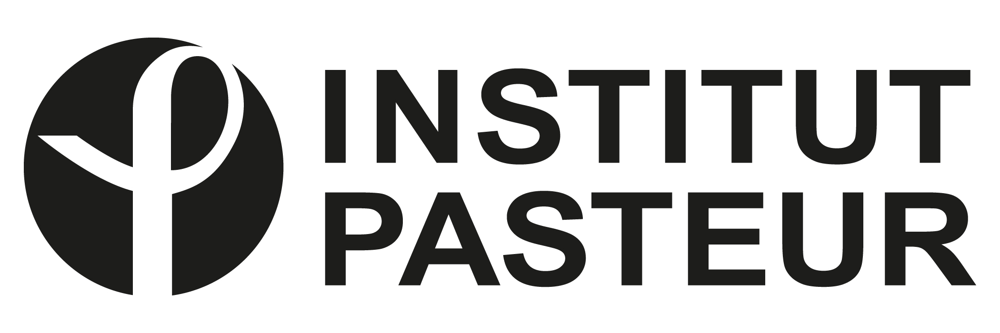

Ce mini-symposium se tiendra dans le cadre de la conférence JOBIM 2024. Il est soutenu par le GDR BIMMM, l’institut de convergence Inception, le LPSM et le LIP6.
Ce mini-symposium se tiendra dans le cadre de la conférence JOBIM 2024. Il est soutenu par le GDR BIMMM, l’institut de convergence Inception, le LPSM et le LIP6.
Motivation
Although bulk transcriptomic analyses have greatly contributed to a better understanding of complex diseases, their accuracy is usually hindered by the heterogeneous cellular composition of most biological samples. On the other hand, single-cell RNASeq analysis are expensive and time-consuming, while they suffer from a variety of intrinsic statistical limitations, notably a subsequent reduced depth and coverage of the RNA library.
To address the limitations of these physical approaches, a vast array of computational deconvolution methods has been designed to automatically infer the characteristics of the distinct subcomponents that make up tissues. The most typical approach consists of inferring the relative abundances of the cellular populations by leveraging reference samples of physically purified populations. Briefly, the deconvolution algorithms assume a linear relationship between the resulting, total ‘bulk’ expressions of transcripts (depicted as the observations in a regression framework), and the expression of transcripts in purified cell populations. The unknown cellular ratios to retrieve are subsequently the individual contributions of subpopulations to the “pool of transcripts” within each sample.
However, gold-standard deconvolution algorithms suffer from a variety of common limitations. While a jungle of methods has been proposed, there’s no real consensus nor practical solution to solve the following critical issues: their underperformance at differentiating closely related or rare cell populations, the lack of consistency characterizing the outputs returned by these methods and the commonly observed discrepancy observed in real-word conditions between the ratios estimated through these numerical approaches, and the ones measured using physical methods, such as mass cytometry experiences.
Finding potential solutions to these problems will promote new methodological advances that will have direct impact on the research of versatile and multi- faceted diseases, such as cancer or auto-immune diseases. Indeed, by enhancing the characterization of complex and critical tissues and niches, such as the tumoral micro-environment in a non-destructive fashion, these cutting-edge models would streamline the unravelling of the interactions occurring within a variety of cell populations, paramount to maintain the homeostasis of biological systems.
Program
- 14h00-14h10
Introduction Emeline Perthame et Bastien Chassagnol
- 14h10-14h40
Vera Pancaldi CRCT, INSERM – Université de Toulouse, France
Deconvolution for clinical applications: a quest to make sense of reference-based deconvolution on tumour tissue samples
Despite the increasing popularity of single-cell technologies, their price, complicated protocols and uncertain biases make it an unlikely option to be applied routinely in clinical practice. Especially when confronted with tumour samples, capturing cellular heterogeneity as well as the presence of specific subtypes is key to correctly stratify patients and personalise their treatment. Deconvolution of cell type proportions offers an interesting solution that has been widely explored in the last few years. Despite the large and growing number of methods and signatures generated, it remains very hard to define consensus between them and benchmarks are abundant but not trivial. In our lab we are interested in practical applications of these methods in immuno-oncology and we have therefore strived to perform benchmarks and generate data that would help us find some order in the sea of methods and signatures that exist. In particular, we have generated in-vitro data to generate some of the phenotypes that we aim to identify in patients under controlled conditions. Meanwhile, we have strived to develop methods that deconvolve the presence of specific cell-states, rather than cell-types, rarely captures by in-vitro or in-silico benchmark datasets.
- 14h40-15h00
Hugo Barbot IRMAR – Université de Rennes - France
Multi-omic statistical inference of cellular heterogenetity
Cellular heterogeneity in biological tissues reflects progression of disease state and is therefore useful for improved diagnostic and prognosis. Cell deconvolution is a common approach to unravel the heterogeneous molecular profiles observed in bulk tissues. So far, cellular deconvolution assumes that bulk omic profiles result from weighted sums of so-called signature cell-specific omic profiles, weights being the unknown proportions of those cell types. Consistently, most statistical methods used for cellular deconvolution are based on extensions of the Ordinary Least Squares (OLS) optimization algorithm, under nonnegativity and sum-to-one constraints on those unknown mixing coefficients. Using OLS make implicit assumptions which are highly questionable when applied to bulk molecular profile. Indeed, strong violations of those assumptions may be due to the instrinsic nature of omics data or to the dependence structure induced by the gene regulatory network. The goal of this work is to provide a well defined statistical framework that respects the inherent characteristics of biological data for deconvolution, using multi-omic data. Multi-omic data integration for cellular deconvolution aims at leveraging complementary viewpoints on cellular heterogeneity. Many simultaneous optimization strategies are considered, either based on constrained and weighted maximum likelihood or on gene selection. An extensive comparative study of cell deconvolution performance with leading single or multi-omic methods is conducted on benchmark data and using nine cell types commonly found in PDAC (pancreatic cancer). Results confirm both the gain in a multi-omic integration approach and in the use of ad-hoc probability distributions for each -omic data type.
- 15h00-15h15
Francesca Finotello Institute of Molecular Biology – Université d’Innsbruck, Autriche
Next-generation cell-type deconvolution of transcriptomic data
The investigation of the cellular composition and architecture of tissues is key to understanding mechanisms that underlie tissue function and its disruption during disease. Deconvolution is a computational technique used to quantify the cellular composition of complex tissues profiled with transcriptomics technologies. While first-generation deconvolution methods could disentangle only a handful of cell types (mainly human immune cells), second-generation methods can be trained using single-cell transcriptomics data to learn the transcriptional “fingerprints” of any cell type, thereby possibly extending deconvolution to any tissue, disease context, and organism of interest. Moreover, these approaches can now be applied to spatial transcriptomics data, revealing the architecture of tissues and the spatial distribution of their cellular constituents. In this talk, I will show how different types of transcriptomic data can be analyzed deconvoluted to chart the cellular organization of complex tissues in health and disease, with a special focus on next-generation deconvolution techniques.
- 15h15-15h30
Lorenzo Merotto Institute of Molecular Biology – Université d’Innsbruck, Autriche
Benchmarking second-generation deconvolution tools with omnideconv
Deconvolution methods are computational techniques that infer cell-type fractions from bulk RNA sequencing data leveraging cell-type-specific transcriptomic signatures. Second-generation tools, in particular, learn how to quantify different cell types by training their models with an annotated single-cell RNA-seq atlas, extending the applicability of deconvolution to a much broader panel of cell types, tissues, and organisms. This flexibility, however, poses major challenges in their usage and evaluation. Therefore, we developed omnideconv (omnideconv.org), an ecosystem of resources that simplifies the usage and benchmarking of second-generation deconvolution tools. These include a dedicated R package to access several deconvolution tools in a unified and simplified manner; an interactive web app for the exploration of deconvolution signatures and results; a curated compendium of validation datasets from different organisms; 4) a simulator of artificial RNA-seq datasets with controlled composition; and a reusable pipeline for the systematic benchmarking of second-generation deconvolution tools. Building upon these unique methodologies, we extensively benchmarked eight state-of-the-art deconvolution methods under various scenarios that reproduce real-life applications, shedding light on methods’ strengths, weaknesses, and complementarities. In this talk, I will introduce the omnideconv collection of tools and present the framework and results of our benchmarking study.
- 15h30-15h50
Agnieszka Kraft Computational Cancer Genomics Lab - ETH Zürich - Switzerland
Unsupervised Deciphering of Malignant Cell Heterogeneity in Bulk Tumor RNA-Sequencing Data with CDState
Intratumor transcriptional heterogeneity poses a significant challenge in cancer treatment due to limited understanding of tumor cell types, states, and their implications for therapy resistance. While single-cell sequencing has offered insights into tumor composition across various cancer types, its routine clinical application remains impractical. In contrast, bulk RNA sequencing is more feasible but lacks effective methods for identifying subpopulations of malignant cells without relying on marker genes or reference single-cell data. The effectiveness of these methods heavily depends on the availability of an appropriate reference, which continues to pose a significant challenge. To address these limitations, we introduce CDState: an unsupervised method for predicting and enumerating malignant cell subpopulations using bulk tumor data. CDState employs a Nonnegative Matrix Factorization model extended with a sum-to-one constraint on weights and kurtosis-based optimization of source gene expression, to disentangle bulk data into distinct cell states. Validation of CDState using simulated and “bulkified” data from publicly available single-cell RNA sequencing datasets showcases its reliability and accuracy in recovering previously discovered cancer cell states. Based on these results, we apply CDState to 29 TCGA datasets to provide a comprehensive overview of malignant cells’ transcriptional profiles on a pan-cancer scale.
- 15h50-16h00 Conclusion
Une version .pdf du programme est disponible ici.
Informations pratiques
Le mini-symposium aura lieu sur le site de la conférence JOBIM 2024.
Sponsors

